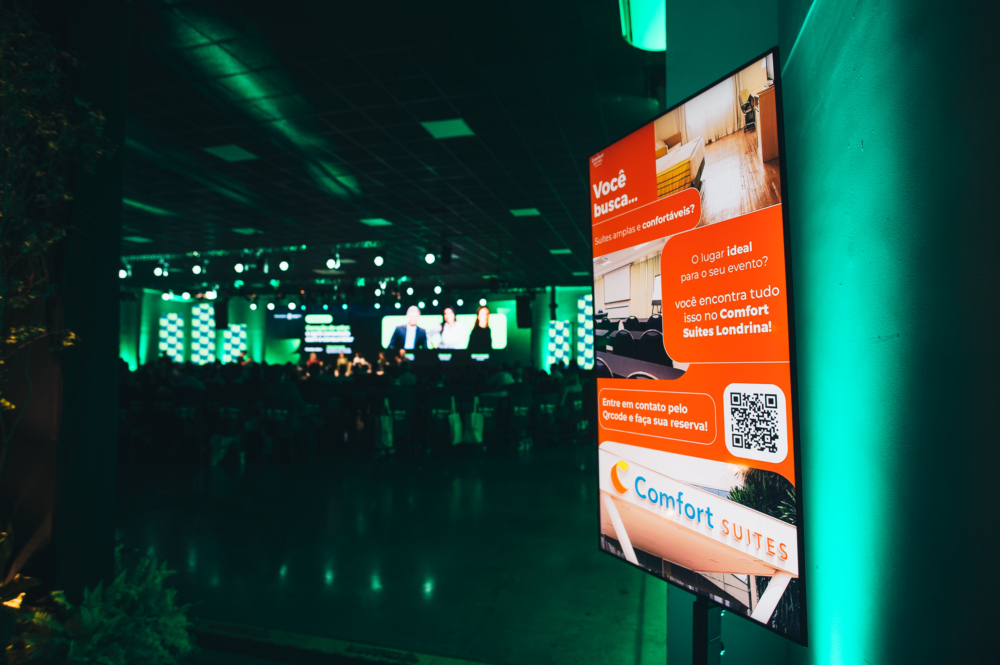
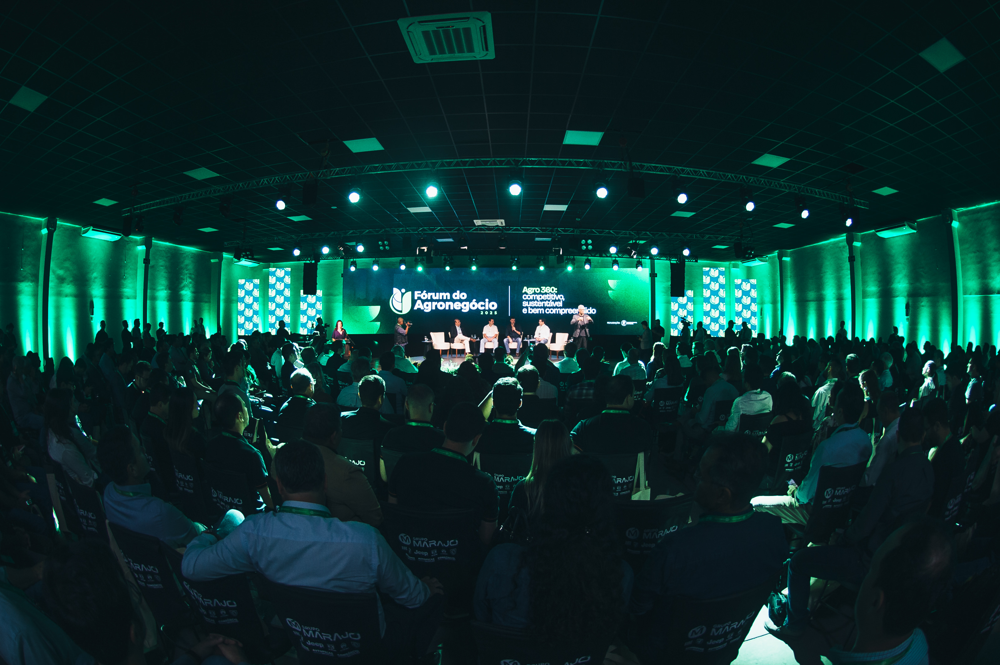
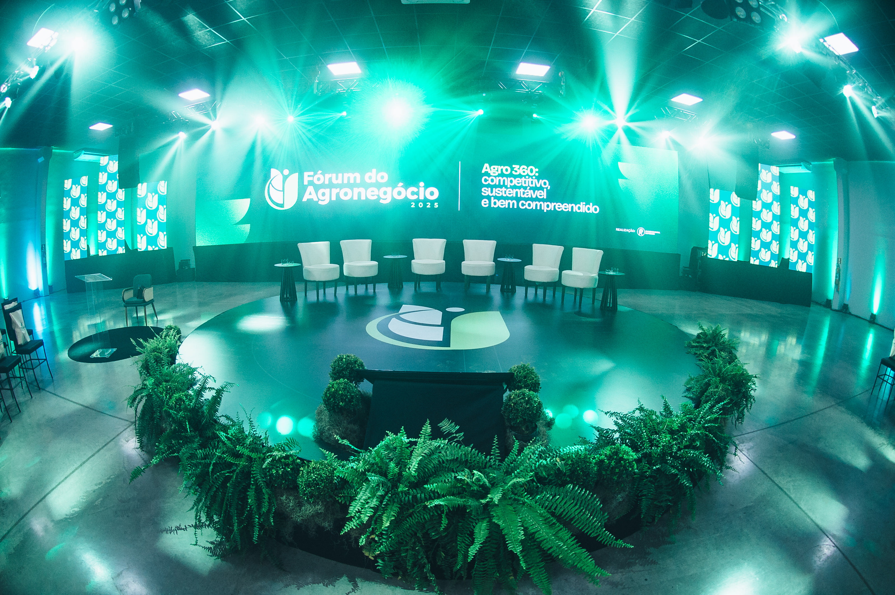
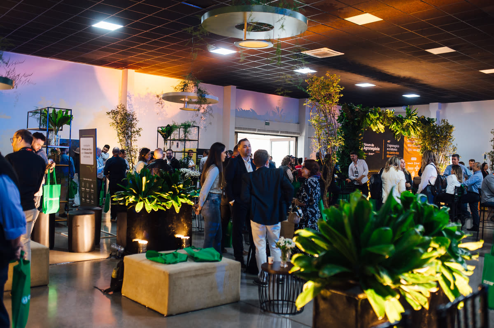

+0
Participantes
7ª edição · Sociedade Rural do Paraná 80 anos
Parque Ney Braga Eventos · Londrina - PR
Edições anteriores
+0
Participantes

+0
Palestrantes e painelistas

+0
Patrocinadores e parceiros institucionais

7ª edição · 2026
O Fórum do Agronegócio, promovido pela Sociedade Rural do Paraná, é um dos principais encontros de lideranças, especialistas e produtores para discutir os caminhos do setor e as transformações que impactam o agro brasileiro.
Em 2026, ano em que a entidade celebra seus 80 anos de história, a 7ª edição do Fórum traz o tema: "O agro que produz, conecta e inspira".
Mais do que debater tecnologia, produtividade e mercados, o Fórum propõe uma reflexão sobre o papel do Brasil no cenário global e a conexão entre quem produz no campo e quem consome na cidade.
Um ambiente de conteúdo, relacionamento e visão de futuro, reunindo os protagonistas que impulsionam a transformação do agronegócio.
Quem sobe ao palco
Palestrantes e mediadores confirmados. [lista em atualização]
03 de setembro · um dia inteiro de conteúdo
| Horário | Atividade |
|---|---|
| 08h00 | Credenciamento e recepção |
| 09h10 | Abertura oficial |
| 09h45 | Painel 1 - Brasil como potência agro: o que define os próximos anos |
| 11h00 | Painel 2 - Rastreabilidade nas cadeias agroalimentares |
| 12h00 | Almoço e networking |
| 14h15 | Painel 3 - Clima, carbono e sustentabilidade: da pressão à oportunidade |
| 15h30 | Painel 4 - Comunicação: quem conta a história do agro? |
| 16h45 | Palestra Magna - O agro que produz também pode inspirar |
| 17h45 | Happy Hour |
Veja todos os painéis, mediadores e palestrantes na programação completa.


Posicione sua marca ao lado das principais lideranças do agro, ampliando sua visibilidade e fortalecendo conexões estratégicas.
Quero patrocinarRealização
O Fórum do Agronegócio é uma realização da Sociedade Rural do Paraná, entidade que celebra 80 anos de história em 2026 e é referência na defesa, representação e desenvolvimento do agronegócio brasileiro. Ao longo de sua trajetória, a SRP conecta produtores, lideranças e instituições, promovendo iniciativas que impulsionam a inovação, a competitividade e a sustentabilidade do setor.
Conheça a Sociedade Rural do Paraná03 de setembro de 2026
Av. Tiradentes, 6275 - Jardim Rosicler, Londrina - PR, 86072-000